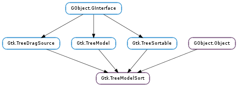

| clear_cache() | |
| convert_child_iter_to_iter(child_iter) | |
| convert_child_path_to_path(child_path) | |
| convert_iter_to_child_iter(sorted_iter) | |
| convert_path_to_child_path(sorted_path) | |
| get_model() | |
| iter_is_valid(iter) | |
| reset_default_sort_func() |
| Name | Type | Flags | Description |
|---|---|---|---|
| model | Gtk.TreeModel | r/w/c | The model for the TreeModelSort to sort |
None
| Name | Type | Access |
|---|---|---|
| parent | GObject.Object | r |
Bases: GObject.Object, Gtk.TreeDragSource, Gtk.TreeModel, Gtk.TreeSortable
The Gtk.TreeModelSort is a model which implements the Gtk.TreeSortable interface. It does not hold any data itself, but rather is created with a child model and proxies its data. It has identical column types to this child model, and the changes in the child are propagated. The primary purpose of this model is to provide a way to sort a different model without modifying it. Note that the sort function used by Gtk.TreeModelSort is not guaranteed to be stable.
The use of this is best demonstrated through an example. In the following sample code we create two Gtk.TreeView widgets each with a view of the same data. As the model is wrapped here by a Gtk.TreeModelSort, the two Gtk.TreeView s can each sort their view of the data without affecting the other. By contrast, if we simply put the same model in each widget, then sorting the first would sort the second.
Using aGtkTreeModelSort
{
GtkTreeView *tree_view1;
GtkTreeView *tree_view2;
GtkTreeModel *sort_model1;
GtkTreeModel *sort_model2;
GtkTreeModel *child_model;
// get the child model
child_model = get_my_model ();
// Create the first tree
sort_model1 = gtk_tree_model_sort_new_with_model (child_model);
tree_view1 = gtk_tree_view_new_with_model (sort_model1);
// Create the second tree
sort_model2 = gtk_tree_model_sort_new_with_model (child_model);
tree_view2 = gtk_tree_view_new_with_model (sort_model2);
// Now we can sort the two models independently
gtk_tree_sortable_set_sort_column_id (GTK_TREE_SORTABLE (sort_model1),
COLUMN_1, GTK_SORT_ASCENDING);
gtk_tree_sortable_set_sort_column_id (GTK_TREE_SORTABLE (sort_model2),
COLUMN_1, GTK_SORT_DESCENDING);
}
To demonstrate how to access the underlying child model from the sort model, the next example will be a callback for the Gtk.TreeSelection Gtk.TreeSelection ::changed signal. In this callback, we get a string from COLUMN_1 of the model. We then modify the string, find the same selected row on the child model, and change the row there.
Accessing the child model of in a selection changed callback
void
selection_changed (GtkTreeSelection *selection, gpointer data)
{
GtkTreeModel *sort_model = NULL;
GtkTreeModel *child_model;
GtkTreeIter sort_iter;
GtkTreeIter child_iter;
char *some_data = NULL;
char *modified_data;
// Get the current selected row and the model.
if (! gtk_tree_selection_get_selected (selection,
&sort_model,
&sort_iter))
return;
/* Look up the current value on the selected row and get a new value
* to change it to.
*/
gtk_tree_model_get (GTK_TREE_MODEL (sort_model), &sort_iter,
COLUMN_1, &some_data,
-1);
modified_data = change_the_data (some_data);
g_free (some_data);
// Get an iterator on the child model, instead of the sort model.
gtk_tree_model_sort_convert_iter_to_child_iter (GTK_TREE_MODEL_SORT (sort_model),
&child_iter,
&sort_iter);
/* Get the child model and change the value of the row. In this
* example, the child model is a GtkListStore. It could be any other
* type of model, though.
*/
child_model = gtk_tree_model_sort_get_model (GTK_TREE_MODEL_SORT (sort_model));
gtk_list_store_set (GTK_LIST_STORE (child_model), &child_iter,
COLUMN_1, &modified_data,
-1);
g_free (modified_data);
}
This function should almost never be called. It clears the tree_model_sort of any cached iterators that haven’t been reffed with Gtk.TreeModel.ref_node (). This might be useful if the child model being sorted is static (and doesn’t change often) and there has been a lot of unreffed access to nodes. As a side effect of this function, all unreffed iters will be invalid.
| Parameters: | child_iter (Gtk.TreeIter) – A valid Gtk.TreeIter pointing to a row on the child model |
|---|---|
| Returns: | True, if sort_iter was set, i.e. if sort_iter is a valid iterator pointer to a visible row in the child model. |
| Return type: | bool, sort_iter: Gtk.TreeIter |
Sets sort_iter to point to the row in tree_model_sort that corresponds to the row pointed at by child_iter. If sort_iter was not set, False is returned. Note: a boolean is only returned since 2.14.
| Parameters: | child_path (Gtk.TreePath) – A Gtk.TreePath to convert |
|---|---|
| Returns: | A newly allocated Gtk.TreePath, or None |
| Return type: | Gtk.TreePath |
Converts child_path to a path relative to tree_model_sort. That is, child_path points to a path in the child model. The returned path will point to the same row in the sorted model. If child_path isn’t a valid path on the child model, then None is returned.
| Parameters: | sorted_iter (Gtk.TreeIter) – A valid Gtk.TreeIter pointing to a row on tree_model_sort. |
|---|---|
| Return type: | child_iter: Gtk.TreeIter |
Sets child_iter to point to the row pointed to by sorted_iter.
| Parameters: | sorted_path (Gtk.TreePath) – A Gtk.TreePath to convert |
|---|---|
| Returns: | A newly allocated Gtk.TreePath, or None |
| Return type: | Gtk.TreePath |
Converts sorted_path to a path on the child model of tree_model_sort. That is, sorted_path points to a location in tree_model_sort. The returned path will point to the same location in the model not being sorted. If sorted_path does not point to a location in the child model, None is returned.
| Returns: | the “child model” being sorted |
|---|---|
| Return type: | Gtk.TreeModel |
Returns the model the Gtk.TreeModelSort is sorting.
| Parameters: | iter (Gtk.TreeIter) – A Gtk.TreeIter. |
|---|---|
| Returns: | True if the iter is valid, False if the iter is invalid. |
| Return type: | bool |
This function is slow. Only use it for debugging and/or testing purposes.
Checks if the given iter is a valid iter for this Gtk.TreeModelSort.
This resets the default sort function to be in the ‘unsorted’ state. That is, it is in the same order as the child model. It will re-sort the model to be in the same order as the child model only if the Gtk.TreeModelSort is in ‘unsorted’ state.